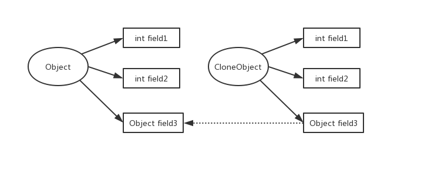

原型模式（Prototype）是用于拷贝一个已经存在的实例，返回新的实例，被复制的实例就是所谓的“原型”，尤其是拷贝复杂对象，创建新的实例非常耗时，原型模式就可以解决性能的问题。
克隆
何为克隆？就是复制一个一模一样的实例，Java中是通过clone方法来实现，以西游记中真假美猴王为例，假猴王有着和真猴王一模一样的长相、武器装备甚至各种能力，但是他们是两个不同的实例，可以说，假猴王是真猴王克隆的，Java中，可被克隆的对象一定要实现Cloneable接口，并且一定要覆盖父类的clone方法。
美猴王：
1 | //真猴王，实现了Cloneable接口并覆盖父类clone方法 |
金箍棒：
1 | public class GoldenStick { |
克隆一个假猴王（真猴王悟空，假猴王六耳猕猴）
1 | public class CloneTest { |
运行结果：
1 | 悟空 == 六耳猕猴： false |
真猴王的金箍棒 == 假猴王的金箍棒？显然是不对的，在这个例子中，假猴王的金箍棒复制的是真猴王金箍棒的引用，实际上他们仍然指向同一个金箍棒对象，这里引申出另一个概念：深拷贝和浅拷贝
浅拷贝
Java中，除了基本数据类型和String以外，其他对象使用赋值操作，赋值的是该对象的引用，不是值。只是将引用传递过去，实际上还指向原来的对象，这就是浅拷贝。

深拷贝
浅拷贝clone方法只能克隆当前基本数据类型成员变量的值，如果成员变量包含其他对象，那么必须在clone方法里逐一克隆成员变量。
GoldenStick实现Cloneable接口
1 | public class GoldenStick implements Cloneable{ |
在MonkeyKing的clone方法中重写clone实现
1 | public class MonkeyKing implements Cloneable{ |
运行CloneTest
1 | 悟空 == 六耳猕猴： false |
结果可见，真假美猴王的金箍棒不再是同一个了。
但是，假如类有上百个成员变量，美猴王除了金箍棒还有紧箍咒、虎皮裙。。。按照这种方式是不是每个成员变量都要实现克隆接口，重写clone方法，然后在MonkeyKing中逐一克隆？显然这是一种效率低下且繁琐的做法，有什么办法能改进？没错，字节码拷贝！所有的类最终都是生成字节码，可以通过拷贝字节码来创建新的对象。
字节码拷贝
字节码拷贝的前提条件是类必须是可序列化的，因此待拷贝的对象和其成员变量都要实现序列化接口
1 | public class MonkeyKing implements Serializable{ |
1 | public class GoldenStick implements Serializable{ |
拷贝方法和测试
1 | public class ClassDeepCopy { |
测试结果：
1 | 悟空 == 六耳猕猴： false |
使用场景
- 类的成员变量不多，又不想通过new方法来创建实例；
- 难以根据类生成实例；
- 类实例生成与框架解耦；
总结
原型模式优点：
- 通过原型模式创建实例比new对象效率更高，对性能消耗明显或者对象复杂的类有显著作用；
- 对比New生成实例，不需要关心构造方法，简化创建实例；
缺点：
- 需要为每个非基本类型或String类型的成员变量重写clone方法，如果成员变量多，很繁琐；
- 如果修改已有的类的代码，违背了开闭原则；